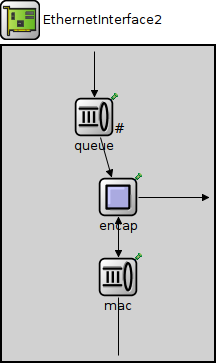
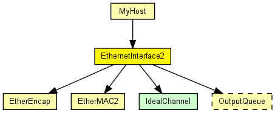
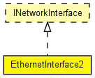

Ethernet network interface which supports full-duplex operation only. Complements EtherMAC2 and EtherEncap with an output queue for QoS and RED support.
See also: EthernetInterface, EthernetInterfaceNoQueue
The following diagram shows usage relationships between types. Unresolved types are missing from the diagram. Click here to see the full picture.
The following diagram shows inheritance relationships for this type. Unresolved types are missing from the diagram. Click here to see the full picture.
If a module type shows up more than once, that means it has been defined in more than one NED file.
| MyHost (compound module) | (no description) |
| Name | Type | Default value | Description |
|---|---|---|---|
| queueType | string | "DropTailQueue" |
| Name | Value | Description |
|---|---|---|
| display | i=block/ifcard |
| Name | Direction | Size | Description |
|---|---|---|---|
| netwIn | input | ||
| netwOut | output | ||
| phys | inout |
| Name | Type | Default value | Description |
|---|---|---|---|
| mac.promiscuous | bool | false |
if true, all packets are received, otherwise only the ones with matching destination MAC address |
| mac.address | string | "auto" |
MAC address as hex string (12 hex digits), or "auto". "auto" values will be replaced by a generated MAC address in init stage 0. |
| mac.mtu | int | 1500 |
// // Ethernet network interface which supports full-duplex operation only. // Complements EtherMAC2 and EtherEncap with an output queue for QoS and // RED support. // // @see EthernetInterface, EthernetInterfaceNoQueue // module EthernetInterface2 like INetworkInterface { parameters: string queueType = default("DropTailQueue"); @display("i=block/ifcard"); gates: input netwIn; output netwOut; inout phys @labels(EtherFrame); submodules: queue: <queueType> like OutputQueue { parameters: @display("p=92,71;q=l2queue"); } mac: EtherMAC2 { parameters: queueModule = "queue"; txQueueLimit = 1; // queue sends one packet at a time @display("p=116,231"); } encap: EtherEncap { parameters: @display("p=116,151"); } connections: netwIn --> queue.in; queue.out --> encap.upperLayerIn; netwOut <-- { @display("m=n"); } <-- encap.upperLayerOut; encap.lowerLayerOut --> mac.upperLayerIn; encap.lowerLayerIn <-- mac.upperLayerOut; mac.phys <--> phys; }